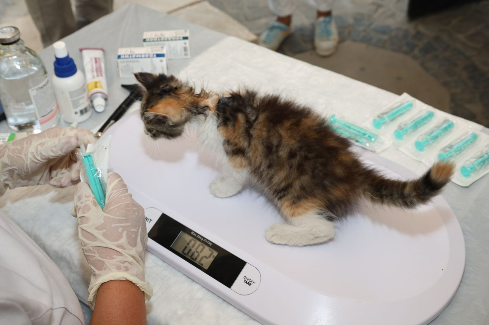
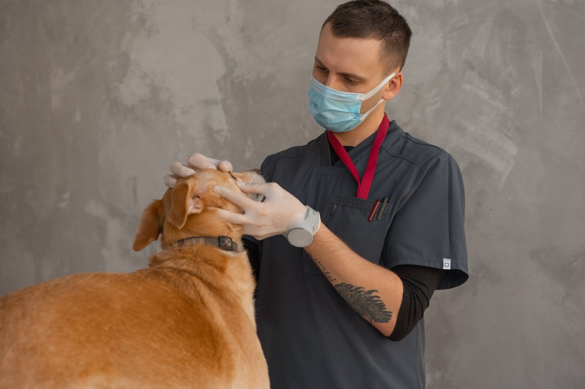

O nas
Poznaj naszą przychodnię
Kontrola, szczepienie albo kłopot ze zdrowiem pupila? Zadzwoń, umówimy wizytę w dogodnym terminie.

Gabinet w Drobinie, od 2006 roku
Gabinet prowadzi lekarz weterynarii Marcin Fronczak. Przyjmujemy psy, koty i inne zwierzęta domowe z Drobina i okolicznych miejscowości powiatu płockiego.
Na wizycie jest czas na pytania. Wyjaśniamy, co dolega pupilowi i jakie są możliwości leczenia, a przy okazji doradzamy w sprawie karmienia i pielęgnacji.
Zapraszamy
Zapraszamy do gabinetu
Umów wizytę w dogodnym terminie - telefonicznie lub przez formularz.